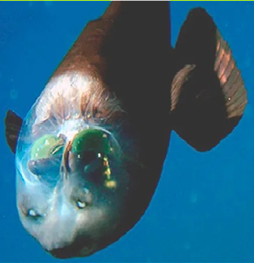

СЕМЕЙСТВА Опистопроктовые
ГЛУБИНА:от 500 до 800 метров
КОГДА ОТКРЫЛИ: 1939 году
ТИП ПИТАНИЯ:хищник, питающийся зоопланктоном, мелкой рыбой и сифонофорами
Вертикально-горизонтальный обзор: Глаза обычно направлены вверх для обнаружения силуэтов добычи (мелких зоопланктонов) на фоне слабого света сверху. При необходимости глаза поворачиваются вперед, позволяя точно навестись на цель перед ртом.
Пассивный стиль охоты: Большую часть времени рыба проводит неподвижно, зависая в горизонтальном положении в толще воды. Она использует широкие грудные плавники для стабилизации.
Поведение при опасности: При угрозе бочкоглаз прижимает грудные и брюшные плавники к телу и совершает резкие маневры с помощью хвоста.
Уникальная охотничья стратегия: Благодаря перемещению глаз в горизонтальное положение рот оказывается в поле зрения, что позволяет ей, находясь под добычей, точно хватать её.
Среда обитания: Обитает в сумеречной зоне океана, предпочитая умеренные и холодные воды северной части Тихого океана.

наверх